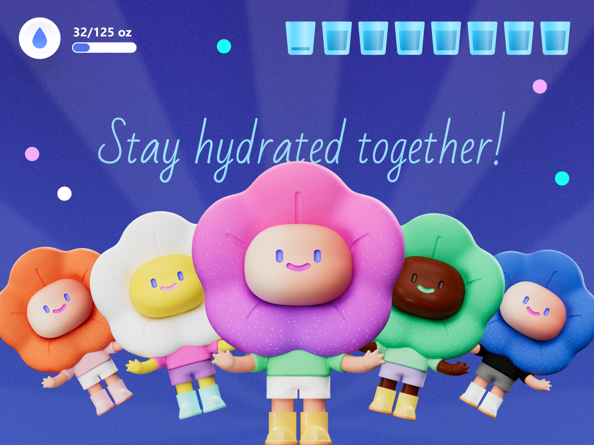

AI
Interaction systems for AI workflows
From input methods to agent control, I design how people express intent and steer output.
I focus on intent-first interfaces, workflow control, and agent transparency.
From input methods to agent control, I design how people express intent and steer output.
Working demos and concrete interaction models — built and demoable, not just static screens.
Tools, agents, creation workflows, and new human–computer interaction patterns.
Selected work
Direct manipulation
Beyond prompting — three tools that let people steer AI directly: set parameters, navigate the process, and edit in context.
Turn vague prompts into explicit, structured parameters — Human → Parameters → AI.
A live remote-control panel for moving across the stages of an AI workflow — steerable while it runs.
Steer AI output directly through in-context clicks, comments, and edits — instead of re-prompting from scratch.
Product thinking
People increasingly express goals, not commands. AI features become useful when the product knows what the user is trying to do and how much control they need.
The most valuable AI is often embedded in workflows people already use — not a separate app you have to visit.
Intent, process, and outcome each need their own interaction patterns. Capability alone doesn't make an experience.
For agentic products, users need to see what the AI is doing, interrupt when needed, and recover a previous state without panic.
More work
Placeholder — more case studies and experiments to drop in.

Daily Water Intake Rich Calendar Answer on Bing
Rich Calendar Answer on Bing
Playground
Finished, linkable experiments — the builder side of the work.
“Better AI isn't just more capable — it's more legible. Good design turns uncertainty into something people can inspect, steer, and trust.”
Contact
Dear potential collaborator,
I like designing AI products that feel powerful without becoming opaque — especially tools for creation, productivity, agents, and workflow automation.
If your team is working near that space, I'd love to chat.
Bingnan